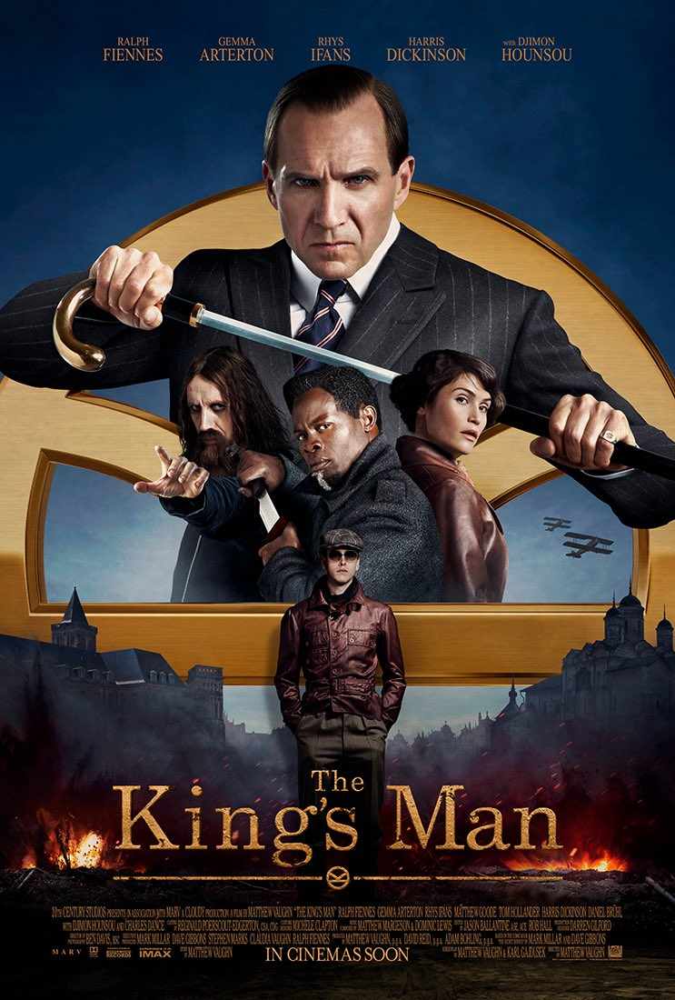

King's Man
|  |
SinopsisUn veterano agente secreto inglés (Colin Firth) debe entrenar a un joven sin refinar (Taron Egerton), pero que promete convertirse en un competitivo agente gracias a un ultra-programa de entrenamiento, al mismo tiempo que una amenaza global emerge procedente de un genio retorcido. Adaptación del cómic de Mark Millar y Dave Gibbons. |
|---|